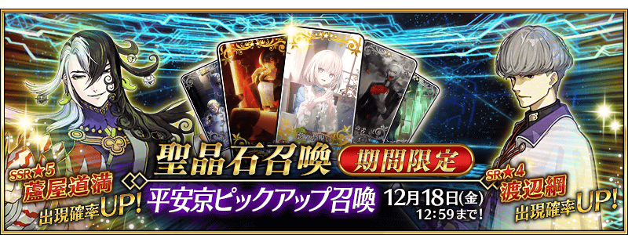
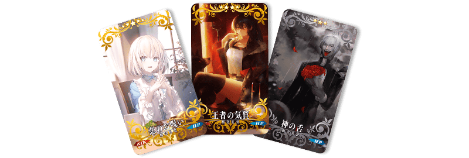
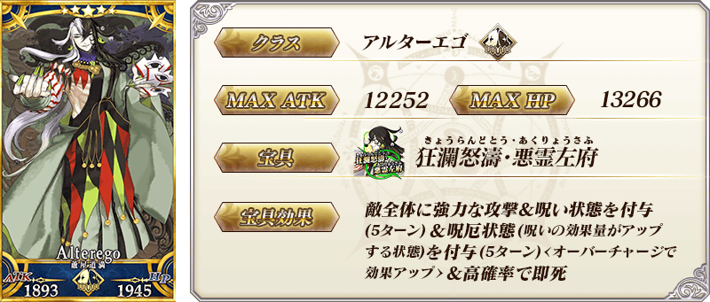
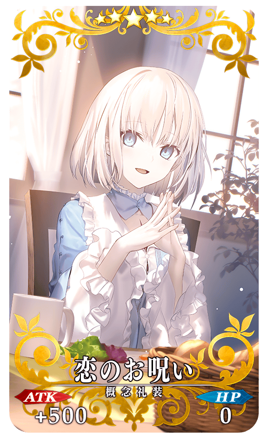
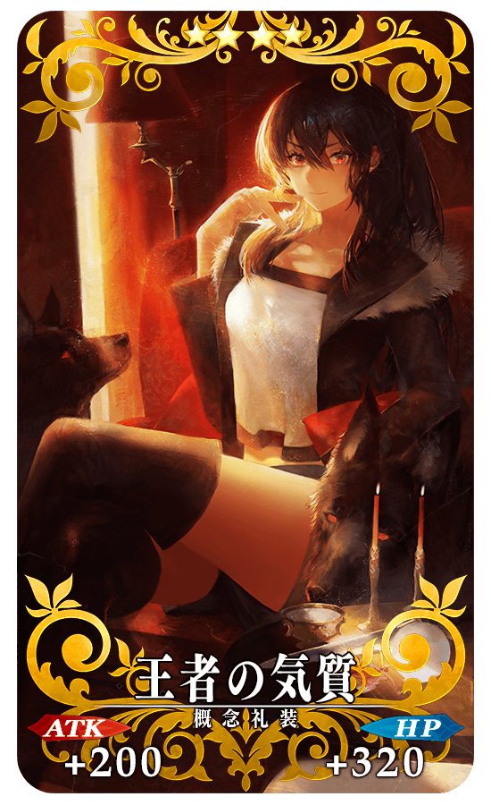
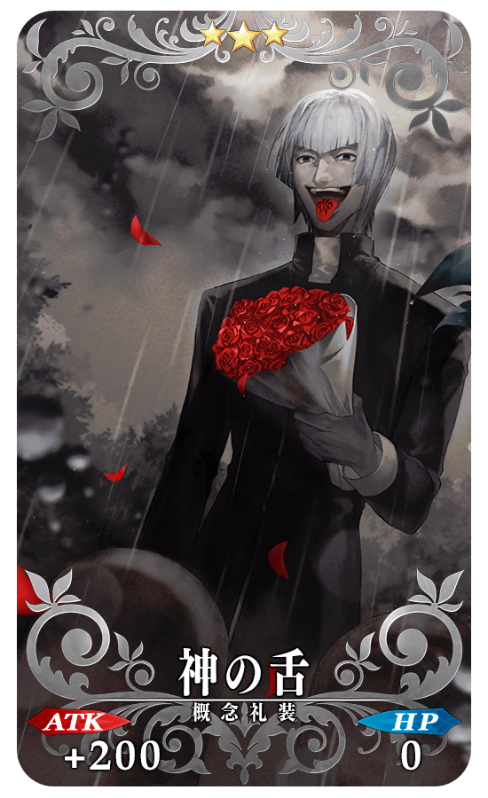
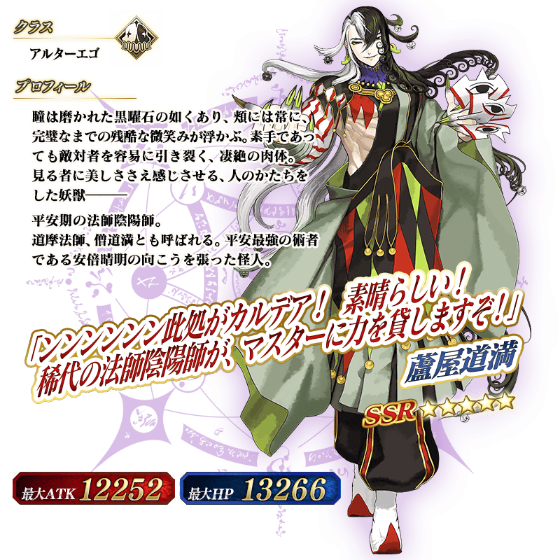
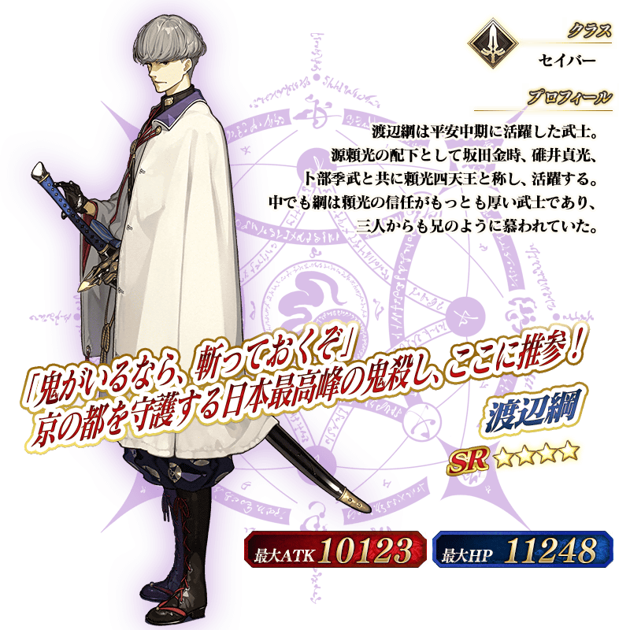
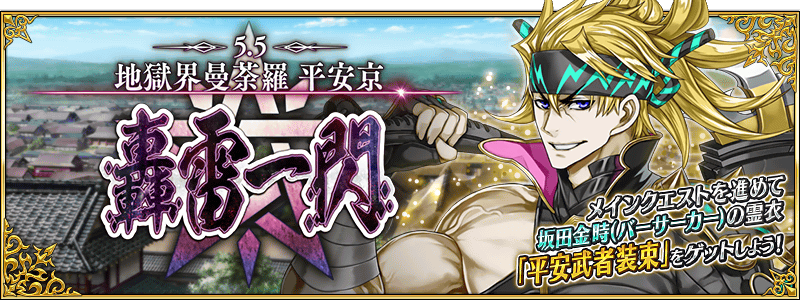

◆「平安京Pick Up召喚」期間◆
期間:2020年12月4日(五) 17:00～12月18日(五) 11:59
為了記念「地獄界曼荼羅 平安京 轟雷一閃」的開幕，舉辦期間限定「平安京Pick Up召喚」！
※就算未滿足主線關卡開放條件的狀態也能進行本召喚。
從「地獄界曼荼羅 平安京 轟雷一閃」關聯從者之中，本召喚中做為初登場的2位從者Pick Up！
▼期間限定從者
・★5(SSR)蘆屋道滿
▼新登場從者
・★4(SR)渡邊綱
另外，做為新規概念禮裝下述的概念禮裝先行新登場！
▼新登場概念禮裝
・★5(SSR)恋のお呪い
・★4(SR)王者の気質
・★3(R)神の舌
並且，★3(R)概念禮裝的一部份陣容翻新！

Pick Up期間中，Pick Up對象從者的出現機率提升！
詳情請在聖晶石召喚畫面左下的召喚詳細確認。
11次召喚中確定1張★4(SR)以上和確定1位★3(R)以上的從者！ ※確定★4(SR)以上包含從者和概念禮裝。 ※本頁面皆為開發中圖片。會有與實際圖片相異的情況。
◆有關「★5(SSR)蘆屋道滿」的注意◆
※「★5(SSR)蘆屋道滿」就算靈基再臨過卡面及戰鬥角色等也變化到第2階段為止。
想變化到第3階段以上的話必須通過『靈基解放關卡』。
※「★5(SSR)蘆屋道滿」的『靈基解放關卡』持有「★5(SSR)蘆屋道滿」的話會登錄到「幕間物語」。
(只登錄到「幕間物語」，沒有文字冒險部份)
※「★5(SSR)蘆屋道滿」的『靈基解放關卡』在通過「地獄界曼荼羅 平安京 轟雷一閃」及「★5(SSR)蘆屋道滿」最終再臨後開放。
※2020年12月16日(三) 17:00以後，『靈基解放關卡』的開放條件只剩「★5(SSR)蘆屋道滿」的最終再臨。
※請注意「★5(SSR)蘆屋道滿」的『靈基解放關卡』不計算在Extra(エクストラ)任務的「通過幕間物語〇個」。
◆有關從者的注意◆
※下述的從者在Pick Up期間結束後不會追加到故事召喚。
・★5(SSR)蘆屋道滿
※下述的從者自Pick Up期間結束後的2020年12月18日(五) 12:00，追加到故事召喚。
・★4(SR)渡邊綱
◆有關概念禮裝的注意◆
※下述的概念禮裝的出現機率不會提升。
・★5(SSR)恋のお呪い
・★4(SR)王者の気質
・★3(R)神の舌
※下述的概念禮裝自Pick Up期間結束後的2020年12月18日(五) 12:00，追加到故事召喚。
・★5(SSR)恋のお呪い
・★4(SR)王者の気質
・★3(R)神の舌
※配合翻新，下述的概念禮裝本召喚中成為召喚對象外。
・★3(R)デイ・アフター
※2020年12月18日(五) 12:00以後，下述的概念禮裝也不會從故事召喚被抽出，追加至友情點數召喚。
・★3(R)デイ・アフター

◆有關「★5(SSR)蘆屋道滿」的注意◆
※「★5(SSR)蘆屋道滿」就算靈基再臨過卡面及戰鬥角色等也變化到第2階段為止。
想變化到第3階段以上的話必須通過『靈基解放關卡』。
※「★5(SSR)蘆屋道滿」的『靈基解放關卡』持有「★5(SSR)蘆屋道滿」的話會登錄到「幕間物語」。
(只登錄到「幕間物語」，沒有文字冒險部份)
※「★5(SSR)蘆屋道滿」的『靈基解放關卡』在通過「地獄界曼荼羅 平安京 轟雷一閃」及「★5(SSR)蘆屋道滿」最終再臨後開放。
※2020年12月16日(三) 17:00以後，『靈基解放關卡』的開放條件只剩「★5(SSR)蘆屋道滿」的最終再臨。
※請注意「★5(SSR)蘆屋道滿」的『靈基解放關卡』不計算在Extra(エクストラ)任務的「通過幕間物語〇個」。

|  |
★★★★★SSR |
|  |
★★★★SR |
|  |
★★★R |


介紹在本召喚Pick Up的2位從者寶具演出！
在「Fate/Grand Order」官方網站內的公告中，以影片公開寶具演出，敬請確認。
【★5(SSR)蘆屋道滿】
【★4(SR)渡邊綱】
關於主線關卡第2部 第5.5章「地獄界曼荼羅 平安京 轟雷一閃」的詳情，請自下述橫幅確認。
■第2部 第5.5章「地獄界曼荼羅 平安京 轟雷一閃」詳細情報 